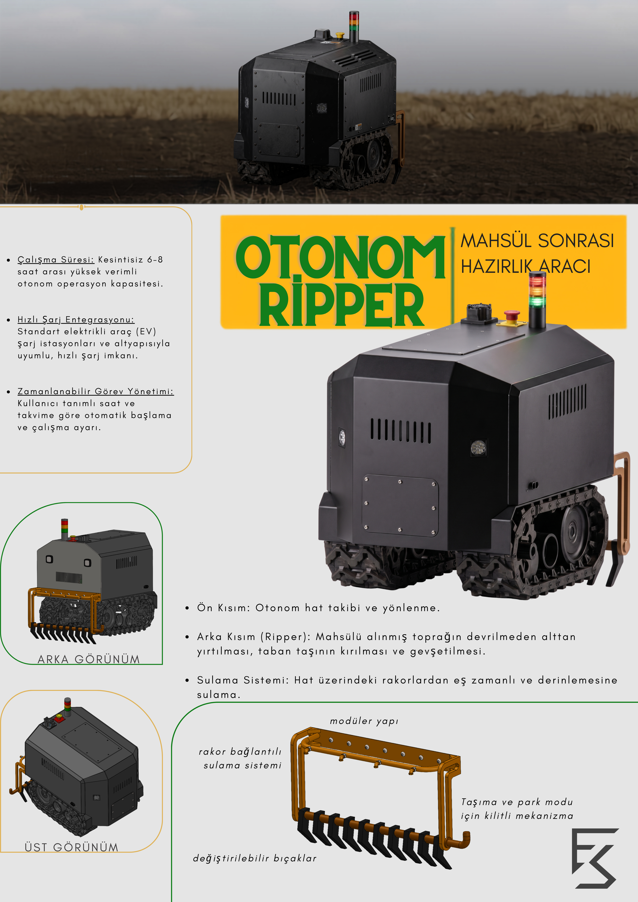

Proje Hakkında
Bu ürün Geleneksel tarım yöntemlerinin neden olduğu taban taşı sıkışmasını önlemek, iş gücü/yakıt maliyetlerini düşürmek ve kaynak verimliliğini artırmak amacıyla tasarlanmış Otonom Derin Toprak İşleme ve Hassas Sulama Robotudur.
Mühendislik ve Tasarım Süreci
- Kenat ve park ekipmanları tasarımı ve üretimi yapan bir firmadaki aday mühendislik sürecimde tasarlanmıştır.

- Eklenmiş olan video ve görseller tasarlanan ürünün çalışma prensibini ve kullanım amacını göstermek amacıyla yapay zeka ile oluşturulmuştur. Ürüne ait CAD tasarımı bana aittir.